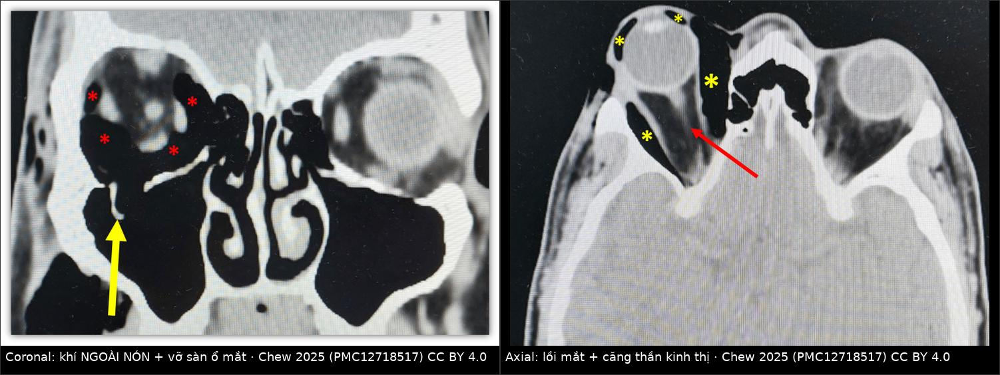
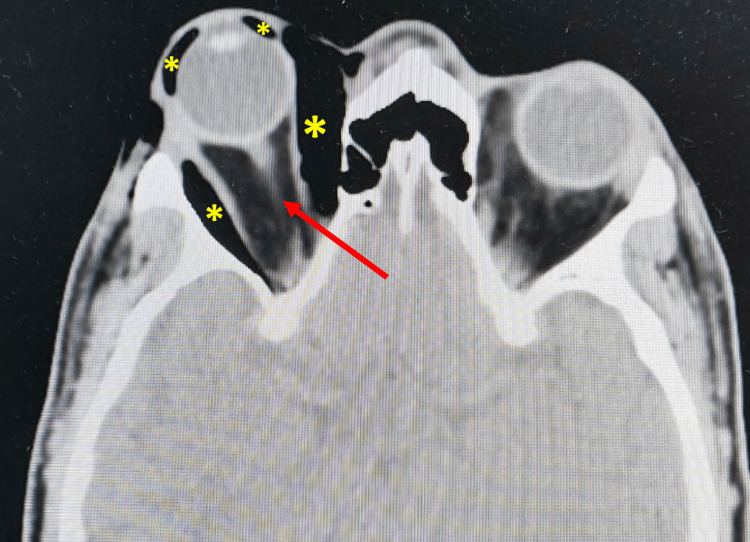
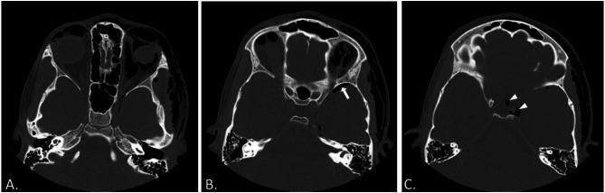

3105 — Tràn khí ổ mắt sau chấn thương gò má ở trẻ / Orbital emphysema after zygomatic trauma
Tags: pattern:khi-trong-mo-mem pattern:tran-khi pattern:loi-mat pattern:gay-xuong pattern:phu-mi vung:hoc-mat vung:so-mat vung:xoang-ham protocol:CT-lat-mong protocol:coronal protocol:canthotomy score:IOP
Mức chắc chắn (certainty): tổng hợp y văn (literature synthesis) — ghép 1 ca người lớn 47 tuổi diễn tiến tràn khí căng (tension orbital emphysema) → hội chứng khoang (Cureus 2025, PMC12718517, CC BY 4.0), 1 ca trẻ 12 tuổi tràn khí ổ mắt hai bên + khí vào nội sọ không gãy xương do súng khí nén (BMC Pediatr 2025, PMC11874850, CC BY 4.0) và bài nền 420 (vỡ sàn + hội chứng khoang). Không có thử nghiệm ngẫu nhiên.
Câu chốt: tràn khí ổ mắt thường lành tính và tự hết trong vài ngày đến vài tuần, nhưng nó có thể biến thành "van một chiều": không khí vào được mà không ra được → tràn khí căng → hội chứng khoang ổ mắt (OCS) → mù trong vài giờ. Chốt hành động không phải là CT, mà là IOP + lồi mắt + đồng tử + vận nhãn. Ở trẻ, hai bẫy lớn là chấn thương khí nén (khí theo khe ổ mắt trên vào xoang hang/nội sọ dù không gãy xương) và trapdoor với bề ngoài "mắt trắng".
1. Tổng quan bệnh học – cơ chế hình ảnh (TẠI SAO)
1.1 Khí vào hốc mắt bằng đường nào
- Hốc mắt là một khoang kín hình nón, thể tích ≈ 30 mL ở người lớn, giới hạn bởi xương cứng và phía trước là vách ngăn (orbital septum) + sụn mi — hai cấu trúc kém đàn hồi. Vì thể tích cố định, một lượng khí nhỏ cũng làm áp lực trong hốc mắt tăng rất nhanh (quan hệ Laplace: áp lực ∝ lực/thể tích; thành càng kém giãn, áp lực càng tăng).
- Sau gãy sàn ổ mắt hoặc thành trong, xoang hàm/xoang sàng thông với hốc mắt. Xì mũi, hắt hơi, ho, thở Valsalva, thổi khí nén làm áp lực đường thở trên tăng vọt → khí bị đẩy qua lỗ xương vào mô mềm hốc mắt.
- Cơ chế "van một chiều": mô mềm/niêm mạc sa vào lỗ vỡ như nắp van — khí vào được nhưng không thoát ra khi áp lực hạ → khí tích lũy dần → tràn khí căng. Đây là lý do triệu chứng có thể nặng lên sau 24 giờ dù phim đầu tiên "chỉ khí nhẹ" (ca 47 tuổi: IOP 28 → 48 mmHg trong 1 ngày).
- Khí lên nội sọ: từ hốc mắt, khí theo khe ổ mắt trên (superior orbital fissure) quanh xoang hang vào nội sọ — không cần gãy xương sọ. Ca trẻ 12 tuổi bị súng khí nén có khí ở thùy thái dương, dọc xoang hang và cạnh hố yên, kèm khí ở khoang nhai, tuyến mang tai, khoang cảnh và hai bên cạnh hầu, không có gãy xương trên CT.
1.2 TẠI SAO CT đọc được chính xác
- Khí có tỷ trọng ≈ −1.000 HU, đen tuyệt đối trên cửa sổ mô mềm — khác mỡ (−50 đến −120 HU, xám đen) và khác dịch (0–20 HU). Vì vậy CT không cần cản quang vẫn định vị được khí trong khoang ngoài nón, trong nón, dưới kết mạc, trong bao cơ.
- Vị trí khí điển hình: phía trên và phía trong, khoang ngoài nón → trên phim thẳng tạo dải sáng hình liềm "dấu lông mày đen" (black eyebrow sign). Dấu này gợi ý mạnh nhưng dễ bị bỏ sót; CT là chuẩn.
- TẠI SAO phải nhìn thần kinh thị: khí tăng thể tích đẩy nhãn cầu ra trước (lồi mắt) và kéo căng – gập thần kinh thị (dấu "globe tenting"). Trên CT axial, thần kinh thị mất đoạn cong mềm và căng thẳng giữa nhãn cầu và đỉnh ổ mắt — tương ứng với giảm tưới máu thần kinh, không chỉ là "khí đẹp mắt".
- Ngưỡng thiếu máu: tài liệu ca dẫn thiếu máu thần kinh thị sau khoảng 3 giờ chèn ép kéo dài; bài 420 dùng cửa sổ vàng 60–90 phút cho hội chứng khoang do máu. Vì vậy không chờ CT để giải áp khi đã có dấu hiệu lâm sàng.
1.3 Ngưỡng định lượng nằm lòng
| Đại lượng | Số liệu | Nguồn |
|---|---|---|
| Thể tích hốc mắt người lớn | ≈ 30 mL | PMC12718517 |
| IOP lúc vào → lúc nặng nhất (ca 47 tuổi) | 28 → 48 mmHg trong 24 giờ | PMC12718517 |
| IOP sau mở góc mắt ngoài đơn thuần | 48 → 28 mmHg | PMC12718517 |
| Thời gian hồi phục thị lực/vận nhãn | 5 ngày, thị lực 6/9, không RAPD | PMC12718517 |
| Ngưỡng IOP thực hành cho OCS | > 40 mmHg + lồi mắt/cứng/giảm thị lực | bài 420; PMC12718517 |
| Thời gian thiếu máu thần kinh thị | ≈ 3 giờ (dẫn từ y văn ca) | PMC12718517 |
| Tỷ lệ tràn khí ổ mắt sau gãy thành ổ mắt | chưa rõ — thay đổi theo loạt; nguồn chỉ ghi "thường gặp" | PMC12718517 |
2. Mẫu hình + chẩn đoán phân biệt theo vị trí (gamut)
- Theo khoang: ngoài nón (hay gặp nhất, trên–trong) → dưới kết mạc (khí nổi thành bọt, lạo xạo) → trong nón (hiếm, nguy hiểm hơn vì chèn ép trực tiếp thần kinh thị) → nội sọ (pneumocephalus, theo khe ổ mắt trên/xoang hang).
- Theo cơ chế: (1) chấn thương gãy sàn/thành trong — phổ biến nhất; (2) sau mổ hốc mắt/mi/lệ/xoang; (3) áp lực dương — súng khí nén, thổi bóng, lặn, thông khí áp lực dương; (4) nhiễm khuẩn sinh hơi (rất hiếm, kèm sốt/đau nhiều); (5) dị vật/kén khí bẩm sinh (loại trừ bằng bối cảnh).
- Mnemonic "GAS": Gãy xương ổ mắt (floor/medial wall), Ap lực dương (khí nén/Valsalva/nose blowing), Sau mổ / Sinh hơi (infection).
- Gamut theo triệu chứng: sưng mi + lạo xạo (tràn khí dưới da) ≠ lồi mắt + IOP cao (tràn khí căng) ≠ nhìn đôi dọc + nôn (trapdoor) ≠ sốt + đau + hạn chế vận nhãn (áp-xe/viêm mô tế bào).
3. Bảng so sánh phân biệt (ma trận đối chiếu)
| Thực thể (entity) | Hình ảnh điển hình (CT không cản quang) | Chốt vào (rule-in) | Chốt loại (rule-out) | Gợi ý xác nhận |
|---|---|---|---|---|
| Tràn khí ổ mắt đơn thuần | Khí −1.000 HU khoang ngoài nón trên–trong; dấu lông mày đen trên X-quang | Lạo xạo + khí trên CT + IOP bình thường/không lồi mắt | Khí trong nón + lồi mắt + IOP tăng → không còn "đơn thuần" | CT ≤ 1 mm; theo dõi 4–6 giờ |
| Tràn khí căng / OCS do khí | Khí lượng lớn + lồi mắt + căng thần kinh thị; có thể khí trong nón | IOP > 40 mmHg + lồi mắt/cứng + RAPD/liệt vận nhãn | IOP bình thường + không lồi mắt + thị lực nguyên → chưa căng | Giải áp ngay, không chờ CT |
| Máu sau nhãn cầu (retrobulbar hematoma) | Khối tăng tỷ trọng 50–90 HU, hình thấu kính, đẩy nhãn cầu; không có khí | Chấn thương + lồi mắt nhanh + IOP cao + CT khối máu | Khí đen tuyệt đối −1.000 HU → không phải máu | Canthotomy/cantholysis; CT để loại trừ |
| Áp-xe/viêm mô tế bào ổ mắt | Mô mềm dày, ngấm thuốc viền, có thể khí sinh hơi; lâm sàng sốt/đau | Sốt + đau + hạn chế vận nhãn + viền ngấm thuốc | Khí đơn thuần không viền ngấm + không sốt → tràn khí chấn thương | Kháng sinh ± dẫn lưu; không chọc khí |
| Khí dưới kết mạc | Bọt khí dưới kết mạc, có thể lan mi; nhãn cầu nguyên | Lạo xạo dưới kết mạc + không giảm thị lực | Giảm thị lực + tiền phòng nông + nhãn cầu mềm → nghi vỡ củng mạc | Soi đèn khe; không thăm dò mù |
| Pneumocephalus do khí lan | Khí trong khoang nội sọ, dọc xoang hang/khe ổ mắt trên | Khí nội sọ trên CT + đau đầu/ý thức thay đổi | Không khí nội sọ → chỉ theo dõi ổ mắt | CT não; tránh Valsalva/N₂O |

Trái: khí ngoài nón (dấu *) + vỡ sàn ổ mắt (mũi tên vàng). Phải: lồi mắt + khí (dấu *) + thần kinh thị căng thẳng (mũi tên đỏ). Nguồn: Chew 2025, PMC12718517, CC BY 4.0. Ảnh ghép letterbox, giữ nguyên nhãn gốc.4. Protocol chụp + ngưỡng xử trí
- CT hốc mắt – sọ mặt không cản quang, lát ≤ 1 mm, axial + coronal + sagittal, cửa sổ xương và mô mềm; luôn kèm cửa sổ nội sọ để tìm khí nội sọ (khe ổ mắt trên → xoang hang → thùy thái dương).
- Trước CT (nếu nghi OCS): đo IOP hai mắt, thị lực, đồng tử/RAPD, vận nhãn, soi đèn khe; không để xe CT làm trễ giải áp.
- Ngưỡng giải áp: IOP > 40 mmHg hoặc IOP tăng nhanh kèm lồi mắt, nhãn cầu cứng, RAPD, liệt vận nhãn, giảm thị lực → mở góc mắt ngoài (lateral canthotomy) ± cắt dây chằng mi (cantholysis); nếu khí là thành phần chính có thể chọc giảm áp bằng kim dưới hướng dẫn CT/siêu âm (đã báo cáo trong y văn), hoặc giải áp nội soi/mở khi thất bại.
- Điều trị nội khoa hỗ trợ: acetazolamid toàn thân, thuốc hạ nhãn áp tại chỗ, đầu cao, giảm đau; tuyệt đối không xì mũi, tránh Valsalva/ho mạnh; tránh N₂O khi gây mê (N₂O khuếch tán vào khoang khí kín làm khí to thêm).
- Khí nội sọ: theo dõi tri giác/đồng tử, oxy 100% (giúp hấp thu khí), CT não lặp nếu tri giác xấu; hội chẩn ngoại thần kinh khi pneumocephalus căng.
- Sau giải áp: đo lại IOP, khám thần kinh thị mỗi 1–2 giờ trong 24 giờ đầu; chụp lại CT nếu lồi mắt tái diễn.
flowchart TD
A[Chấn thương gò má/mũi + sưng mi + lạo xạo] --> B[CT hốc mắt <= 1 mm + cửa sổ nội sọ]
B --> C{Có khí trong hốc mắt?}
C -->|Không| Z[Đánh giá theo bài 420 và 1716]
C -->|Có| D[Đo IOP hai mắt + thị lực + RAPD + vận nhãn]
D --> E{IOP > 40 mmHg hoặc tăng nhanh + lồi mắt/cứng/RAPD?}
E -->|Có| F[Mở góc mắt ngoài +/- cắt dây chằng mi; chọc giảm áp nếu khí là chính]
E -->|Không| G[Theo dõi: không xì mũi, không Valsalva, đo IOP lại 4-6 giờ]
F --> H[Khám lại thị lực/IOP + CT não nếu khí lan nội sọ]
G --> H
5. Biến thể bình thường và cạm bẫy
- IOP bình thường lúc đầu không loại trừ: ca 47 tuổi vào với IOP 28 mmHg, chưa lồi mắt, chỉ 1 ngày sau đã 48 mmHg + lồi mắt + liệt vận nhãn. Phải đo lại và dặn bệnh nhân quay lại ngay nếu đau tăng/mắt lồi.
- "Mắt trắng" ở trẻ: trapdoor (vỡ kiểu nắp) có thể không phù nề nhiều, nhưng kẹt cơ + nôn + nhịp chậm (phản xạ mắt–tim) lại nặng — tin triệu chứng, không tin vẻ ngoài (bài 1716, 420).
- Khí dưới kết mạc giả vỡ củng mạc: bọt khí + xuất huyết dưới kết mạc có thể che một vết rách củng mạc; ca trẻ 12 tuổi đã thăm dò dưới gây mê để loại trừ. Không chọc/ấn nhãn cầu khi chưa loại trừ vỡ; chỉ thăm dò khi nghi cao.
- Bỏ sót khí nội sọ: khí dọc khe ổ mắt trên dễ bị coi là "khí ngoài nón"; phải đọc lên tới xoang hang/hố yên, hỏi đau đầu, tri giác. Không dùng N₂O, tránh Valsalva sau mổ.
- Xì mũi sau mổ/chấn thương = tự bơm khí: dặn tuyệt đối không xì mũi, hắt hơi mở miệng, tránh thổi bóng/ống thổi; trẻ chơi súng khí nén là cơ chế đặc thù.
- Canthotomy đơn thuần có thể đủ: ca này chỉ mở góc mắt ngoài, không cắt dây chằng, IOP giảm 48 → 28; nhưng nếu nhãn cầu vẫn căng/không cải thiện thì phải cắt dây chằng hoặc chuyển giải áp phẫu thuật — không chờ.
- Kháng sinh không thường quy cho tràn khí đơn thuần; cân nhắc khi có viêm xoang/áp-xe hoặc gãy xoang hở bẩn.
6. Tự lượng giá — Blind Quiz
Ca 1 — Nam 47 tuổi, chấn thương má phải do tai nạn xe máy, 1 ngày sau mắt lồi, nhãn cầu cứng, IOP 48 mmHg.

- Gợi ý: thị lực còn 6/9, không RAPD; vận nhãn hạn chế mọi hướng; không sốt.
- Câu hỏi: Khí nằm ở khoang nào? Dấu hiệu nào cho thấy thần kinh thị đang bị chèn ép? Xử trí ngay là gì, và vì sao không chờ chuyển tuyến?
Bấm để hiện đáp án (findings + chẩn đoán)
- Dấu hiệu: khí (dấu *) ở khoang ngoài nón + trong nón, nhãn cầu lồi ra trước, thần kinh thị căng thẳng (mũi tên đỏ) — dấu "globe tenting"; không thấy khối máu tăng tỷ trọng.
- Chẩn đoán: tràn khí căng (tension orbital emphysema) gây hội chứng khoang ổ mắt trên nền vỡ sàn — chẩn đoán lâm sàng, IOP 48 + lồi mắt + cứng + hạn chế vận nhãn.
- Xử trí: mở góc mắt ngoài ± cắt dây chằng mi ngay, acetazolamid toàn thân; nếu khí là thành phần chính có thể chọc giảm áp bằng kim. Ca nguồn: canthotomy đơn thuần đưa IOP 48 → 28 mmHg, hồi phục hoàn toàn sau 5 ngày.
- Vì sao không chờ: thiếu máu thần kinh thị sau khoảng 3 giờ chèn ép có thể để lại mù không hồi phục; CT không phải điều kiện để giải áp.
- Nguồn ảnh: Cureus 2025;17(11):e97421 (PMC12718517), Fig. 3, CC BY 4.0.
Ca 2 — Trẻ 12 tuổi, súng khí nén bắn vào mặt, mắt trái sưng, lạo xạo lan tới hàm, vận nhãn hạn chế; không sốt, không gãy xương trên CT.

- Gợi ý: IOP và đáy mắt bình thường; thị lực 6/18 mắt trái, 6/9 mắt phải; có bọt khí dưới kết mạc.
- Câu hỏi: Vì sao trẻ có thể có khí nội sọ mà không gãy xương? Cần tìm dấu hiệu nào trên CT? Điều trị ban đầu gồm gì?
Bấm để hiện đáp án (findings + chẩn đoán)
- Dấu hiệu: (A) khí dưới da + khí ổ mắt hai bên + khí dọc khe ổ mắt trên trái; (B) khí nội sọ thùy thái dương trái (mũi tên); (C) khí dọc xoang hang trái và cạnh hố yên (đầu mũi tên). Không có gãy xương trên CT.
- Cơ chế: khí áp lực cao đi qua khe ổ mắt trên quanh xoang hang vào nội sọ — đường giải phẫu, không cần gãy xương.
- Điều trị: bảo tồn — nằm đầu cao, không Valsalva/không xì mũi, theo dõi tri giác; ca nguồn hồi phục sau 4 tuần. Thăm dò củng mạc dưới gây mê chỉ để loại trừ vỡ khi có xuất huyết dưới kết mạc + bọt khí.
- Nguồn ảnh: BMC Pediatr 2025;25:160 (PMC11874850), Fig. 2, CC BY 4.0 (Bassiouny A và cs).
Bài liên quan chéo
- 420 – Vỡ sàn hốc mắt & hội chứng khoang — ngưỡng IOP > 40 mmHg, canthotomy/cantholysis.
- 1716 – Gãy phức hợp gò má–hàm trên ở trẻ — trapdoor, bốn trụ đỡ, chỉ định mổ.
- 423 – Rò động mạch cảnh–xoang hang — khí/giãn tĩnh mạch mắt, tiếng thổi, phân biệt với khí đơn thuần.
- 422 – Viêm giả u hốc mắt — đau + cả gân + đáp ứng corticoid.
Ảnh
images/3105_tran-khi-o-mat_CT_PMC12718517-f2.jpg(coronal: khí ngoài nón + vỡ sàn) và..._f3.jpg(axial: lồi mắt + căng thần kinh thị) — Cureus 2025 (PMC12718517), CC BY 4.0, giữ nguyên nhãn gốc.images/3105_tran-khi-o-mat_CT_PMC11874850-f2.jpg(A–C: khí ổ mắt hai bên, khe ổ mắt trên, khí nội sọ) — BMC Pediatr 2025;25:160 (PMC11874850), CC BY 4.0.images/composite_tran-khi-o-mat.jpg— ảnh ghép letterbox từ hai hình của ca người lớn (cùng bệnh nhân, hai bình diện), dải đen ghi attribution.- Chi tiết nguồn + giấy phép:
images/CREDITS.md.
Không dùng để chẩn đoán độc lập khi chưa có người hướng dẫn.